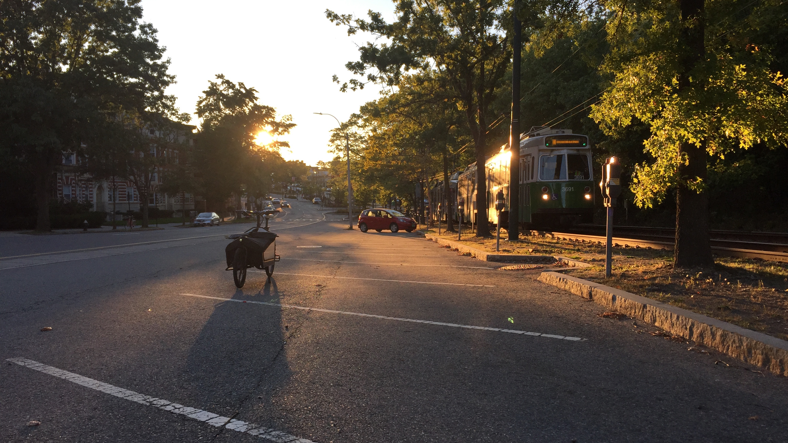

Restoring the bridle path on Beacon St. in Brookline---

View W.: S. side:
Lancaster Ter. / Fairbanks St. - Summit Path mid-block
(5:56 PM, Sun., Oct. 1, 2017)
It seems that there is an opportunity to substantially increase
safety and comfort for people bicycling and walking on Beacon St.
by creating a two-way bicycling (and possibly walking) path along
the median, positioned between the MBTA train tracks and the car
parking spots. This is the location and route of the "bridle way"
in F.L. and J.C. Olmsted's design for the street (circa 1880's)
and in historical built versions of it.
Consider:
+ Concept bottom line (Dec. 9, 2017 - May 7, 2018):
Summarizes results of CAD modeling and ground-truthing study
of the feasibility of recreating this median protected path
(likely initially primarily for bicycling use) over the whole
of Beacon St. in Brookline. Especially addresses geometric
fit and specific challenges to implementation that are
presented by existing conditions.
Illustrates this improvement (along with shortened cross-walk
distances and provision of moderate car traffic calming) by
updating Mass. DOT's traffic plans for the street's last major
renovation via a "shrink to fit" cross-section transformation.
- - - - - - - - - - - - - - - - - - - - - - - -
+ Preview video (Oct. 4, 2017):
Demonstrates bicycling along the median of Beacon St. as near
to the historical bridle path route as currently possible,
from Washington St. to Harvard St., traveling Eastward
(from 12:22 to 12:33 PM, on a Wed.).
- - - - - - - - - - - - - - - - - - - - - - - -
+ Concept description (Sep. 13 - 26, 2017):
Frames this concept, precedents, and a course of study to
further develop design and implementation specifics, in order
to support evaluation and discussion by Beacon St.'s broad
array of stakeholders.
+ Concept map with annotations (Aug. 15 - 24, 2017):
Models a break-down of Beacon St. into segments divided per
the usability of its current condition for two-way bicycling
(and possibly walking) along the median. And overlays
measured illustrations of the street's potential condition
[#N1] if it were transformed to create a dedicated path there
for these uses.
+ Cross-section analysis (July 18 - Aug. 13, 2017):
Examines the default cross-section of Beacon St., which exists
at most locations---largely everywhere except intersections.
Includes values for the street's current built form and also
for potential forms [#N1] that would create a dedicated median
bicycling (and possibly walking) path.
Sincerely,
Jules Milner-Brage
--------------------------------------------------------------------------
[#N1---]
These early documents focused on one strategy for freeing space
in the median (back-in angled car parking without a dedicated
maneuvering lane) and one alignment of a path in the resultant
space (along the already-paved route, which is curvy at curb
bulb-outs but amenable to definition via flex-posts, largely
without requiring new pavement or repositioning of curbs).
With further study, additional strategies (e.g., narrowing
car travel, turn-queueing, and parking maneuvering lanes) and
additional alignments (e.g., more-straight routes, which exist
at some curb bulb-out locations but which would likely require
some new pavement and/or repositioning of curbs) are explored.
{kind=link}